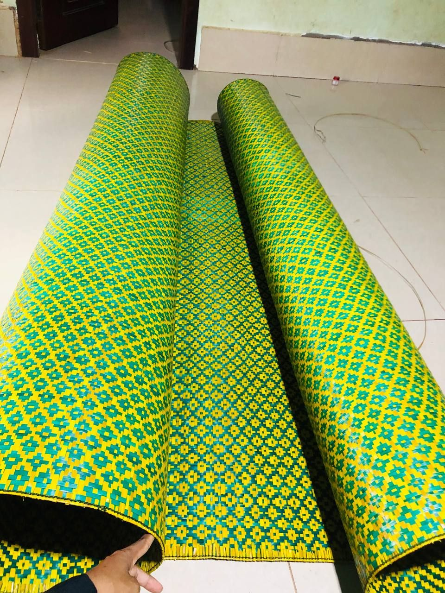
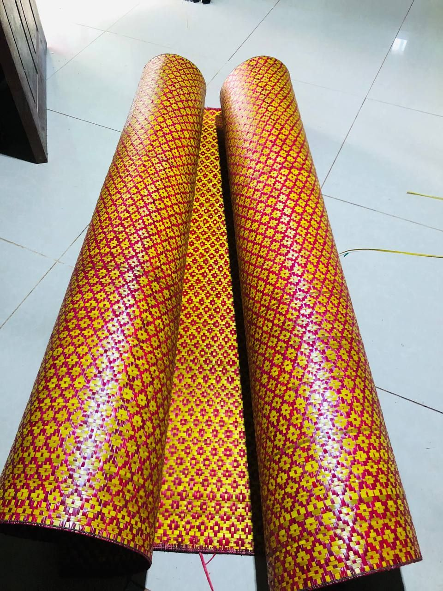
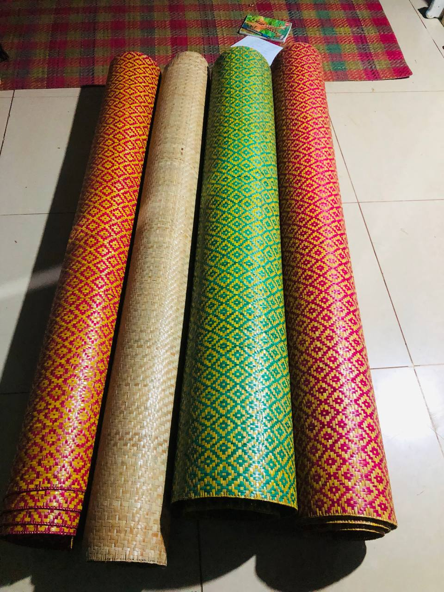

ស្វាគមន៍មកកាន់ កន្ទេលផ្អាវធ្វើដោយដៃ ដែលផលិតពីផ្អាវធម្មជាតិសុទ្ធសាធ ជាប់បានយូរ និងមានរចនាប័ទ្មដិតដំដួង។ យើងបង្កើតកន្ទេលសម្រាប់ផ្ទះ អំណោយ ពិធីបុណ្យ និង ការតុបតែង ដោយផ្ដោតលើគុណភាព និងភាពជាតិ។
យើងជាគ្រួសារមនុស្សម្នាក់សមល្មម ដែលចូលចិត្តសិប្បកម្មចាក់កន្ទេល បង្កើតជាកន្ទេលប្រើប្រាស់ប្រចាំថ្ងៃ។ គោលបំណងរបស់យើង គឺរក្សាទុកបេតិកភណ្ឌខ្មែរ ខណៈផ្តល់ផលិតផលមានគុណភាព និងតម្លៃសមរម្យ។



សិប្បកម្មកន្ទេលផ្អាវរបស់យើងផ្ដើមចេញពីក្ដីស្រឡាញ់ និងការចង់ថែរក្សាមរតកត្បាញកន្ទេលពីដូនតា។ រាល់កន្ទេលនីមួយៗត្រូវបានចាក់ដោយដៃយ៉ាងសម្រិតសម្រាំងបំផុត ដើម្បីធានាបាននូវភាពធន់ ភាពទន់ល្មើយ និងសោភ័ណភាពដិតដំដួងសម្រាប់គេហដ្ឋានរបស់អ្នក។
ជ្រើសរើសតែដើមផ្អាវដែលមានគុណភាពល្អ មិនប្រើប្រាស់សារធាតុគីមីរក្សាទុក។
ឆ្លងកាត់ការត្បាញយ៉ាងផ្ចិតផ្ចង់ពីជាងដែលមានបទពិសោធន៍យូរឆ្នាំ ជាប់បានរាប់សិបឆ្នាំ។